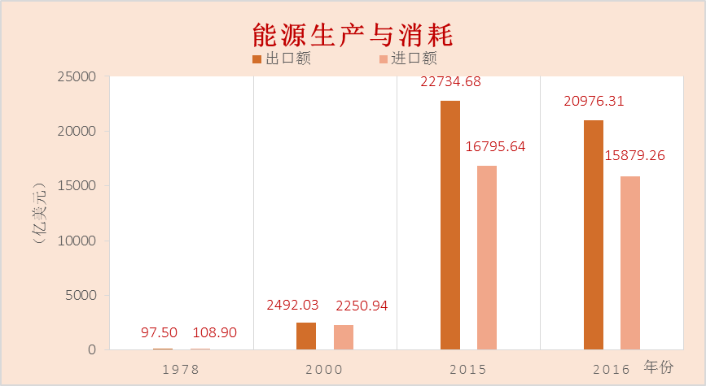
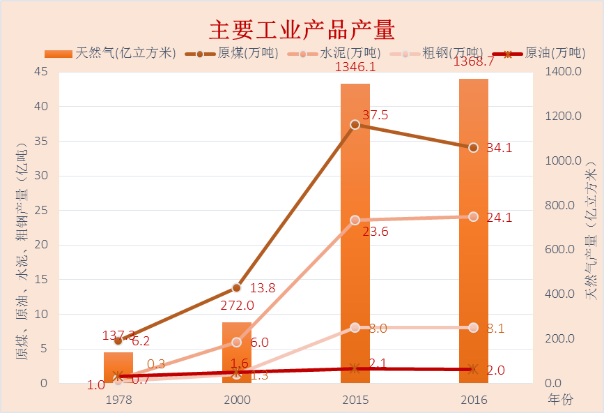

我国经济已由高速增长阶段转向高质量发展阶段，正处在转变发展方式、优化经济结构、转换增长动力的攻关期，建设现代化经济体系是跨越关口的迫切要求和我国发展的战略目标。
【建设现代化经济体系六大任务】
- 深化供给侧结构性改革
- 加快建设创新型国家
- 实施乡村振兴战略
- 实施区域协调发展战略
- 加快完善社会主义市场经济体制
- 推动形成全面开放新格局
【深化供给侧结构性改革】
建设现代化经济体系，必须把发展经济的着力点放在实体经济上，把提高供给体系质量作为主攻方向，显著增强我国经济质量优势。加快建设制造强国，加快发展先进制造业，推动互联网、大数据、人工智能和实体经济深度融合，在中高端消费、创新引领、绿色低碳、共享经济、现代供应链、人力资本服务等领域培育新增长点、形成新动能。支持传统产业优化升级，加快发展现代服务业，瞄准国际标准提高水平。促进我国产业迈向全球价值链中高端，培育若干世界级先进制造业集群。加强水利、铁路、公路、水运、航空、管道、电网、信息、物流等基础设施网络建设。坚持去产能、去库存、去杠杆、降成本、补短板，优化存量资源配置，扩大优质增量供给，实现供需动态平衡。激发和保护企业家精神，鼓励更多社会主体投身创新创业。建设知识型、技能型、创新型劳动者大军，弘扬劳模精神和工匠精神，营造劳动光荣的社会风尚和精益求精的敬业风气。

